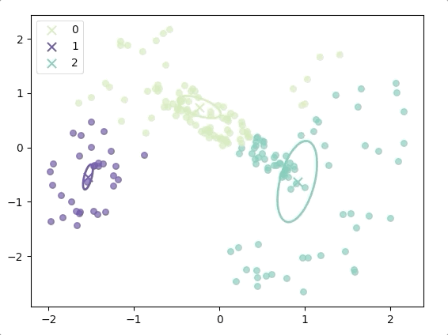
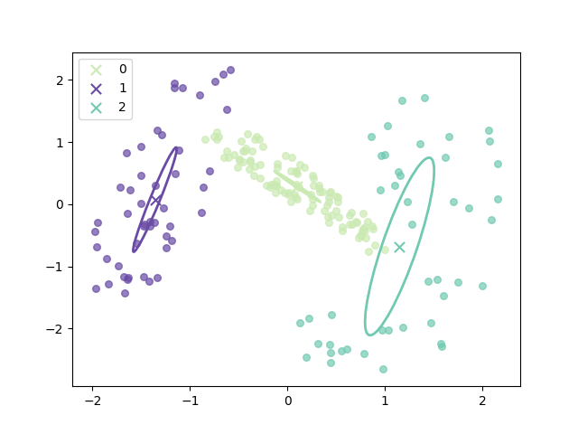

EM Algorithm
EM Algorithm for Gaussian Mixture1
Analysis
Maximizing likelihood could not be used to the Gaussian mixture model directly, for its severe defects that we have come across at 'Maximum Likelihood of Gaussian Mixtures'. By the inspiration of K-means, a two-step algorithm was developed.
The objective function is the log-likelihood function:
\[ \begin{aligned} \ln p(\boldsymbol{x}|\boldsymbol{\pi},\boldsymbol{\mu},\Sigma)&=\ln (\Pi_{n=1}^N\sum_{j=1}^{K}\pi_k\mathcal{N}(\boldsymbol{x}|\boldsymbol{\mu}_k,\Sigma_k))\\ &=\sum_{n=1}^{N}\ln \sum_{j=1}^{K}\pi_j\mathcal{N}(\boldsymbol{x}_n|\boldsymbol{\mu}_j,\Sigma_j)\\ \end{aligned}\tag{1} \]
The condition that must be satisfied at a maximum of log-likelihood is the derivative(partial derivative) of parameters are 0. So we should calculate the partial derivatives of \(\mu_k\):
\[ \begin{aligned} \frac{\partial \ln p(X|\pi,\mu,\Sigma)}{\partial \mu_k}&=\sum_{n=1}^N\frac{-\pi_k \mathcal{N}(\boldsymbol{x}_n|\boldsymbol{\mu}_k,\Sigma_k)\Sigma_k^{-1}(\boldsymbol{x}_n-\boldsymbol{\mu}_k)}{\sum_{j=1}^{K}\pi_j\mathcal{N}(\boldsymbol{x}_n|\boldsymbol{\mu}_j,\Sigma_j)}\\ &=-\sum_{n=1}^N\frac{\pi_k \mathcal{N}(\boldsymbol{x}_n|\boldsymbol{\mu}_k,\Sigma_k)}{\sum_{j=1}^{K}\pi_j\mathcal{N}(\boldsymbol{x}_n|\boldsymbol{\mu}_j,\Sigma_j)}\Sigma_k^{-1}(\boldsymbol{x}_n-\boldsymbol{\mu}_k) \end{aligned}\tag{2} \]
and then set equation (2) equal to 0 and rearrange it as:
\[ \begin{aligned} \sum_{n=1}^N\frac{\pi_k \mathcal{N}(\boldsymbol{x}_n|\boldsymbol{\mu}_k,\Sigma_k)}{\sum_{j=1}^{K}\pi_j\mathcal{N}(\boldsymbol{x}_n|\boldsymbol{\mu}_j,\Sigma_j)}\boldsymbol{x}_n&=\sum_{n=1}^N\frac{\pi_k \mathcal{N}(\boldsymbol{x}_n|\boldsymbol{\mu}_k,\Sigma_k)}{\sum_{j=1}^{K}\pi_j\mathcal{N}(\boldsymbol{x}_n|\boldsymbol{\mu}_j,\Sigma_j)}\boldsymbol{\mu}_k \end{aligned}\tag{3} \]
in the post 'Mixtures of Gaussians', we had defined:
\[ \gamma_{nk}=p(k=1|\boldsymbol{x}_n)=\frac{\pi_k \mathcal{N}(\boldsymbol{x}_n|\boldsymbol{\mu}_k,\Sigma_k)}{\sum_{j=1}^{K}\pi_j\mathcal{N}(\boldsymbol{x}_n|\boldsymbol{\mu}_j,\Sigma_j)}\tag{4} \] called reposibility. And substitute equation(4) into equation(3):
\[ \begin{aligned} \sum_{n=1}^N\gamma_{nk}\boldsymbol{x}_n&=\sum_{n=1}^N\gamma_{nk}\boldsymbol{\mu}_k\\ \sum_{n=1}^N\gamma_{nk}\boldsymbol{x}_n&=\boldsymbol{\mu}_k\sum_{n=1}^N\gamma_{nk}\\ {\mu}_k&=\frac{\sum_{n=1}^N\gamma_{nk}\boldsymbol{x}_n}{\sum_{n=1}^N\gamma_{nk}} \end{aligned}\tag{5} \]
and to simpilify equation (5) we define:
\[ N_k = \sum_{n=1}^N\gamma_{nk}\tag{6} \]
Then the equation (5) can be simplified as:
\[ {\mu}_k=\frac{1}{N_k}\sum_{n=1}^N\gamma_{nk}\boldsymbol{x}_n\tag{7} \]
The same calcualtion would be done to \(\frac{\partial \ln p(X|\pi,\mu,\Sigma)}{\partial \Sigma_k}=0\) :
\[ \Sigma_k = \frac{1}{N_k}\sum_{n=1}^N\gamma_{nk}(\boldsymbol{x}_n - \boldsymbol{\mu_k})(\boldsymbol{x}_n - \boldsymbol{\mu_k})^T\tag{8} \]
However, the situation of \(\pi_k\) is a little complex, for it has a constrain:
\[ \sum_k^K \pi_k = 1 \tag{9} \]
then Lagrange multiplier is employed and the objective function is:
\[ \ln p(X|\boldsymbol{\pi},\boldsymbol{\mu},\Sigma)+\lambda (\sum_k^K \pi_k-1)\tag{10} \]
and set the partial derivative of equation (10) to \(\pi_k\) to 0:
\[ 0 = \sum_{n=1}^N\frac{\mathcal{N}(\boldsymbol{x}_n|\boldsymbol{\mu}_k,\Sigma_k)}{\sum_{j=1}^{K}\pi_j\mathcal{N}(\boldsymbol{x}_n|\boldsymbol{\mu}_j,\Sigma_j)}+\lambda\tag{11} \]
And multiply both sides by \(\pi_k\) and sum over \(k\):
\[ \begin{aligned} 0 &= \sum_{k=1}^K(\sum_{n=1}^N\frac{\pi_k\mathcal{N}(\boldsymbol{x}_n|\boldsymbol{\mu}_k,\Sigma_k)}{\sum_{j=1}^{K}\pi_j\mathcal{N}(\boldsymbol{x}_n|\boldsymbol{\mu}_j,\Sigma_j)}+\lambda\pi_k)\\ 0&=\sum_{k=1}^K\sum_{n=1}^N\frac{\pi_k\mathcal{N}(\boldsymbol{x}_n|\boldsymbol{\mu}_k,\Sigma_k)}{\sum_{j=1}^{K}\pi_j\mathcal{N}(\boldsymbol{x}_n|\boldsymbol{\mu}_j,\Sigma_j)}+\sum_{k=1}^K\lambda\pi_k\\ 0&=\sum_{n=1}^N\sum_{k=1}^K\gamma_{nk}+\lambda\sum_{k=1}^K\pi_k\\ \lambda &= -N \end{aligned}\tag{12} \]
the last step of equation(12) is because \(\sum_{k=1}^K\pi_k=1\) and \(\sum_{k=1}^K\gamma_{nk}=1\)
Then we substitute equation(12) into eqa(11): \[ \begin{aligned} 0 &= \sum_{n=1}^N\frac{\mathcal{N}(\boldsymbol{x}_n|\boldsymbol{\mu}_k,\Sigma_k)}{\sum_{j=1}^{K}\pi_j\mathcal{N}(\boldsymbol{x}_n|\boldsymbol{\mu}_j,\Sigma_j)}-N\\ N &= \frac{1}{\pi_k}\sum_{n=1}^N\gamma_{nk}\\ \pi_k&=\frac{N_k}{N} \end{aligned}\tag{13} \]
the last step of equation (13) is because of the definition of equation (6).
Algorithm
Equation (5), (8) and (13) could not constitute a closed-form solution. The reason is that for example in equation (5), both side of the equation contains parameter \(\mu_k\).
However, the equations suggest an iterative scheme for finding a solution which includes two-step: expectation and maximization:
- E step: calculating the posterior probability of equation (4) with the current parameter
- M step: update parameters by equation (5), (8) and (13)
The initial value of the parameters could be randomly selected. But some other tricks are always used, such as K-means. And the stop conditions can be one of:
- increase of log-likelihood falls below some threshold
- change of parameters falls below some threshold.
Python Code for EM
The input data should be normalized as what we did in 'K-means algorithm'
1 | def Gaussian( x, u, variance): |
The entire project can be found https://github.com/Tony-Tan/ML and please star me.
The progress of EM(initial with K-means):

and the final result is:

where the ellipse represents the covariance matrix and the axes of the ellipse are in the direction of eigenvectors of the covariance matrix, and their length is corresponding eigenvalues.
References
Bishop, Christopher M. Pattern recognition and machine learning. springer, 2006.↩︎